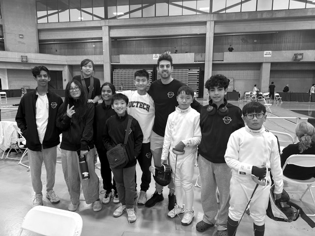
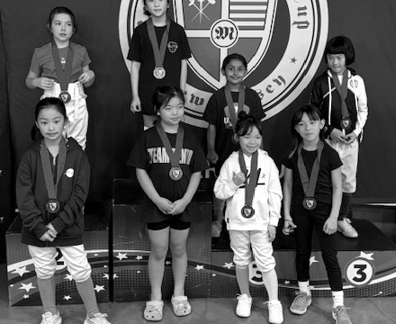

Elite FC fencers at the Morris Cup in Suffern, N.Y.
Photo: Elite FC newsletter.
Nineteen Elite FC fencers made the trip to Suffern, N.Y., for the Morris Cup on Oct. 24–25, a regional youth, cadet and junior tournament at Rockland Community College’s Eugene Levy Field House. The tournament drew big fields: six of the 10 events the club entered had more than 80 fencers, led by 137 in Cadet Men and 115 in Y14 Men.
Elite FC’s group spanned a wide range of ages, with entries in Y8, Y10, Y12, Y14, Cadet and Junior, 29 in all. The club’s first events started at 8 a.m. Saturday; its last, Y10 Men, began at 3:30 p.m. Sunday.
Two Elite FC fencers reached the podium Sunday, both from the youngest age groups the club entered. Madeline Siu won Y8 Women, finishing first of 11. In Y10 Men, Joshua Jeong took 2nd of 30, and Maximus Siu placed 13th in the same field.
On Saturday, Remy Ng finished 14th of 61 in Y12 Men.
The club’s Monday newsletter summed up the weekend: “Our younger generation SHINED.”
The senior epee World Cup season opened in Casablanca, Morocco, Oct. 15–18, with 618 fencers from 67 nations. Italy’s Roberta Marzani won the women’s event, with Ukraine’s Anna Maksymenko second and Aizanat Murtazaeva (Russia) and Alberta Santuccio (Italy) third. Hungary’s Mate Tamas Koch won the men’s title over Italy’s Matteo Galassi; Gergely Kovacs (Hungary) and Kano Koki (Japan) took bronze. In the team events, Kazakhstan’s men beat Russia 45-40, and Russia’s women edged Italy 32-31. The next senior epee World Cups are Berne (men) and Wuxi (women), Nov. 12–15.
USA Fencing’s advice for would-be referees starts small: at your own club, when two fencers are bouting, offer to referee. Practice every chance you get, ideally with an experienced referee or a coach as a mentor, and read the rulebook. Even if you never ref a tournament, USA Fencing says, knowing the rules makes you a better fencer, one who can speak up when a rule is misapplied.
Certification comes in steps. Download the Referee Study Guide, take a referee seminar, then take the online exam: a general section plus at least one weapon section, and you need 90 percent on each. There’s a fee, and a failed exam can be retaken within 48 hours. Pass, and you hold a P rating.
Examiners look for consistency: the same call at 14-14 as at 1-1.
After that, ratings are earned on the strip. A practical exam from a Referee Examiner is the step to a local or regional rating, and the ladder runs from L2 and L1 (local events) to R2 and R1 (regional) and N2 and N1 (national). Examiners look for consistency: the same call at 14-14 as at 1-1.
You don’t have to be an adult. Referees as young as 13 with a P rating may work regional tournaments, and at those events anyone who referees more than a single round of pools must be paid. Every referee needs a current USA Fencing membership; referees 18 and older also need a background check and SafeSport training. To keep a rating, retake the exam every two years, attend a seminar, and referee at your level at least once every two years.
Friday open bouting at Elite FC is a good place to start.
| Fencer | Event | Place |
|---|---|---|
| Maksim Milinkovic | Cadet Men, FIE Cadet World Cup (San José, Costa Rica, Oct. 22) | 6th |
Morris Cup finishes are in the lead story.
| Event | Elite FC |
|---|---|
| Friday, Nov. 27 | |
| Y14 Men | Connor Anderson, Noah Gore, Kian Jaising, Remy Ng, Ash Shah-Mirani |
| Cadet Women | Amina Gore, Olivia Hayes, Stella Kuo, Lillian Liu, Mila Siu, Penny Young |
| Y10 Men | Bryce Cheng, Joshua Jeong |
| Saturday, Nov. 28 | |
| Y12 Women | Christina Jiang, Stella Kuo, Mila Siu, Penny Young |
| Y12 Men | Kian Jaising, Joshua Jeong, Remy Ng |
| Sunday, Nov. 29 | |
| Y14 Women | Stella Kuo, Mila Siu, Penny Young |
| Cadet Men | Connor Anderson, Nico Ng, Caden Wu |
| Time | Event | Elite FC |
|---|---|---|
| Sunday, Nov. 8 | ||
| 9:00 AM | Y10 Mixed | Bryce Cheng |
| Time | Event | Elite FC |
|---|---|---|
| Saturday, Oct. 31 | ||
| 8:00 AM | Junior Women | Olivia Hayes, Lillian Liu, Anayaa Sheth, Adela Sullivan |
| 1:00 PM | Cadet Men | Maksim Milinkovic, Caden Wu |
| Sunday, Nov. 1 | ||
| 8:00 AM | Junior Men | Pablo Aguirre, Dieko Johnson, Maksim Milinkovic, Nico Ng |
| 1:00 PM | Cadet Women | Olivia Hayes, Lillian Liu, Adela Sullivan, Penny Young |
| Time | Event | Elite FC |
|---|---|---|
| Sunday, Nov. 8 | ||
| 9:30 AM | Y12 Men | Samuel SarroWaite |
| 9:30 AM | Y12 Women | Christina Jiang |
| 11:30 AM | Y10 Mixed | Nora Li |
| 11:30 AM | Y14 Men | Owen Li |
Cobra Challenge is at the Meadowlands Expo Center in Secaucus: 16 Elite FC fencers, 26 entries; check-in times post by Nov. 1. Ultimate Cup is at Iron Peak Sports & Events in Hillsborough: 10 Elite FC fencers, 14 entries.
| Date | What closes |
|---|---|
| Thu 10/29 | Ultimate Cup: last day to enter (late fees) |
| Sun 11/1 | Cobra Challenge: regular entry closes (late to Nov. 7) |
| Sat 11/7 | Medeo #5: preregistration closes |
| Wed 11/11 | Junior Olympics: regular-fee deadline |
| Fri 1/8 | N.J. high school: independent fencers’ entries close |
USA Fencing deadlines are 11:59 p.m. Pacific (2:59 a.m. Eastern the next day).
Elite FC Winter Camp runs Dec. 27–31, 9:30 a.m. to 2 p.m., and it’s open to all levels: footwork, technical and tactical drills, and games. Dec. 27 starts with a swag giveaway. K2 Fitness runs strength and conditioning on Dec. 28 and 30. On Dec. 29, a professional instructor leads yoga and breath control for competition, and lunch is served. Crepes on Dec. 31 celebrate the end of camp and 2026. Call it a tune-up for the second half of the season, or a good excuse to escape visiting relatives for a few hours. If you’re going, let the club know as soon as possible for a headcount; contact the club for price and sign-up.
Regular entry for the Cobra Challenge closes Sunday, Nov. 1. Late entry, at higher fees, runs through Nov. 7, when online entry closes. Every event has a cap; full events take a waitlist, which is free to join, but USA Fencing says you need a payment method on file to be officially on it.
Check-in times will be posted by Nov. 1. The Meadowlands Expo Center opens at 6:30 a.m., parking in the adjacent garages is free, and there’s no Wi-Fi inside; results post only on FencingTimeLive. Medals go to the top 8.
Regular fees are a $35 registration fee plus $90 per event; late entries pay $70 plus $180 per event.

The Y8 Women medalists at the Morris Cup. Elite FC’s Madeline Siu won the event.
Photo: Elite FC newsletter (cropped).
| Dates | Event | Watch |
|---|---|---|
| Nov. 5–8 | Junior/Cadet World Cup (Manama, Bahrain) | No stream listed |
| Nov. 12–15 | Senior World Cups: Berne (men), Wuxi (women) | FencingTV |
| Nov. 26–29 | Junior/Cadet World Cup (Novi Sad, Serbia) | No stream listed |
| Dec. 3–6 | Senior World Cup, men + women (Vancouver) | FencingTV |
From the FIE calendar; no start times or prices listed.
In a direct-elimination bout, a full minute of fencing with no touch is “unwillingness to fight” (t.124), and the referee calls “Halt!” The first time, both fencers get a P-red card, a penalty hit. The second time, the fencer who is behind gets a P-black card and loses the bout; if the score is tied, the lower seed gets it. The minute restarts after every touch and at the start of each period, and no P-card can be given at 14-14 (or 9-9 in a 10-touch bout).